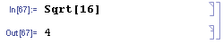

Урок 2
Арифметичні обчислення
Систему WM можна використовувати як звичайний калькулятор, виконуючи арифметичні обчислення.
Варто зауважити, що символ ^ - це піднесення до степеня, а символ * - це операція множення.
Також для позначення операції множення можна використовувати пробіл – він буде автоматично замінений символом множення.
Якщо кількість пробілів між числами більша ніж 1, то символ множення пропаде, але операція множення все рівно виконається.

Можна також писати складні арифметичні вирази.
Пріоритет операцій у WM відповідає стандартним математичним правилам. Для зміни пріоритету операцій можна використовувати дужки.
Якщо у виразі присутні лише цілі числа (без десяткової крапки), то WM не перетворює результат виразу в наближене число, а повертає точний результат, наприклад у вигляді раціонального числа.
Якщо у виразі є десятковий дріб (число з десятковою крапкою), то результат виразу повертається у вигляді десяткового дробу.
Щоб перетворити точний результат в наближений, можна використати функцію N.
Вбудовані функції і змінні
У арсеналі Wolfram Mathematica більше ніж 5000 вбудованих функцій. Загальний вигляд функції наступний Funс[arg1_, arg2_, …], де Func – назва функції (вбудовані функції завжди починаються з великої літери), а arg1, arg2 – назви аргументів. Необхідно розуміти, що для виразу 10 + 3 WM викликає функцію Plus[10, 3]. В цьому немає необхідності, але ви можете обчислити цей вираз викликом функції.
Функція Times виконує множення чисел. У функцію Times, як і у Plus можна передавати будь-яку кількість параметрів.
Результат еквівалентний 2 * 5 * 3 * 4 = 120.
Приклад виклику з одним параметром, або без параметрів взагалі.
Варто пам’ятати, що параметри функції передаються у квадратних дужках. Написання круглих або фігурних дужок є помилкою при виклику функції.
Функції можна вкладати одна в одну, тобто передавати у якості параметрів іншим функціям результати своєї роботи. Ця функція еквівалентна виклику функції Plus[2, 12, 5] або арифметичному виразу 2 + 12 + 5 = 19.
Функція Subtract виконує віднімання, а функція Divide ділення.
Обидві функції приймають лише два параметри. Передавати більшу кількість параметрів, 1 параметр, або викликати функцію без параметрів не можна, на відміну від функцій Times і Plus.
Функція Power підносить число до степеня (також будь-яка кількість параметрів).

Функції Max, Min повертають найбільше і найменше число з переданих параметрів відповідно.
Функція Sqrt обчислює квадратний корінь числа.
Так само як і в арифметичних виразах при введені цілих чисел WM буде повертати точні результати.
Для повернення наближеного результату потрібно викликати функцію N.
Або передавати параметр у вигляді десяткового дробу.
Обчислення факторіалу числа.
Функція Abs повертає модуль числа.
Тригонометричні функції (аргументи приймають значення у радіанах).
Також WM має вбудовані змінні. Зокрема, це деякі математичні константи або спеціальні константи мови. Аналогічно до функцій, імена констант позначаються з великої літери. Ви можете використовувати ці константи у своїх виразах. Приклад таких змінних: число пі, число Ейлера, уявна одиниця, безкінечність, градус.
З усім переліком математичних функцій і змінних можна ознайомитись за посиланням.
Визначення власних функцій і змінних
Іноді буває необхідно зберегти результати обчислення виразу або виконання функції. Для цього у WM існують змінні, які визначаються наступним чином.
У цьому прикладі визначена змінна x, якій привласнено значення 5.
Тепер, кожного разу коли буде зустрічатися змінна x, вона буде замінена значенням 5.
Змінну можна перевизначити, привласнивши їй нове значення.
Змінній можна привласнити також символьний вираз. Вона завжди буде повертати результат обчислення цього виразу.
У даному випадку повертається сам вираз, оскільки змінна y у цьому виразі ще не визначена, і він не може бути обчислений.
Якщо ми визначимо змінну y, то вираз можна буде обчислити.
Після визначення змінної y вона замінюється значенням 5, а змінна x повертає результат обчислення виразу, тобто 25.
Якщо змінити значення y, значення, що поверне x також зміниться.
Привласнимо змінній x інший вираз.

Він одразу ж поверне число 30, оскільки змінна y уже є визначеною. Якщо тепер ми змінимо значення y, то значення x не поміняється.
Це можна пояснити наступним чином. Коли ми привласнювали змінній x вираз y^2, змінна y ще не була визначена, тому змінній x був привласнений саме вираз, а не значення цього виразу, оскільки на момент привласнення не можливо було порахувати його значення.
Коли ж ми у друге привласнювали змінній x вираз 2*y, змінній x було привласнено значення цього виразу, а не сам вираз, оскільки змінна y уже була визначена, і було можливо порахувати його значення.
Така поведінка, особливість оператора = (Set), який обчислює праву частину у момент її привласнення лівій частині, тобто змінній.
У WM є ще один оператор привласнення:= (Set Delayed), який можна назвати оператором відкладеного привласнення. Його відмінність у тому, що він не обчислює праву частину у момент її привласнення лівій частині, тобто змінній, а просто привласнює їй праву частину. Після цього, права частина, тобто вираз, обчислюється кожен раз при виклику цієї змінної, заміняючи цю зміну обчисленим значенням.
Як видно з рисунку, змінній x був привласнений саме вираз, а не результат його обчислення, оскільки її значення залежить від значення y, незважаючи на те, що на момент привласнення змінна y була уже визначена і дорівнювала 1.
Хоча оператор відкладеного привласнення можна використовувати для привласнення виразів змінним, але робити це не рекомендується, оскільки ваш код буде більш заплутаним. Буде краще, якщо змінним будуть привласнюватись конкретні значення обчислених виразів, або результати виконання функцій, а не самі вирази з 5-ма змінними. Крім того, оскільки оператор відкладеного привласнення обчислює привласнену частину кожен раз при виклику змінної, то це може сильно уповільнити обчислення. З точки зори визначення змінної, більш правильним є варіант привласнення значень за допомогою оператора миттєвого привласнення. Тому саме і так визначаються більшість змінних.
Оператор відкладеного привласнення головним чином використовується при визначенні функцій. Визначення функції відбувається наступним чином.
Тут func – це ім’я функції, а x – аргумент . Символ підкреслення _, доданий до аргументу, означає, що цей аргумент є шаблонним і функція визначається для будь-якого виразу WM, що передається їй в якості параметру x, а не для конкретного виразу x.
Тепер ми можемо викликати цю функцію, як ми викликали вбудовані функції WM.
Також можна передавати символьний вираз.
За допомогою оператора ? можна переглянути визначення функції.
Як уже говорилось вище, символ підкреслення означає, що аргумент є шаблонним, тобто на місці цього аргументу може бути будь-який вираз WM, функція буде працювати за однаковим алгоритмом, для всіх параметрів, що відповідають цьому аргументу. Ми можемо задати іншу поведінку функції для конкретних параметрів. Покажемо це на прикладі визначення функції Фібоначчі.
Спочатку ми визначили значення, які повертає функція для параметрів 0 та 1, а потім визначили, як повинні обчислюватися усі інші значення. Таким чином, WM дозволяє вам визначати функції для конкретного випадку і для загального випадку за допомогою шаблонних аргументів.
Для визначення функцій ви можете також застосовувати оператор миттєвого привласнення, але потрібно пам’ятати, що він працює так само, як і зі змінними: обчислює праву частину у момент визначення функції.
Привласнення змінній х значення ніяк не вплинуло на роботу функції. Але якщо тепер перевизначити функцію заново, вона буде повертати один і той самий результат, що буде рівний значенню змінної x на момент визначення функції.
Це накладає обмеження при виборі змінних під час визначення функції: вони не повинні бути уже визначені (зайняті), інакше функція буде повертати константне значення.
Ось ще один приклад, який показує відмінність між визначенням функції за допомогою оператору миттєвого і відкладеного привласнення.
Ми отримали два різні результати, оскільки за допомогою миттєвого привласнення вираз був обчислений у момент визначення функції і під час її виклику замість параметру s було підставлено y + 2, а за допомогою відкладеного привласнення вираз обчислювався під час виклику функції, що дало змогу спочатку підставити у вираз значення параметру s рівного y + 2 і після цього обчислювати його. З точки зору визначення функції, більш правильний є другий варіант, тобто функція визначена за допомогою відкладеного привласнення. Тому саме так і визначаються більшість функції.
При визначенні функцій за допомогою оператора відкладеного привласнення потрібно уникати зовнішніх змінних, що впливають на значення, яке повертає функція при однакових параметрах – це поганий стиль. Ось приклад функції, що керується зовнішнім параметром (уникайте написання таких функцій).
Буває так, що необхідно видалити визначену функцію або змінну з пам’яті. Для цього ви можете використати команду Clear.
Або спеціальний оператор.
Змінні і функції можуть мати практично будь-яке ім’я. Головне правило, вони не повинні починатися з цифри. Як уже було сказано, ім’я усіх вбудованих об’єктів WM починається з великої літери, тому краще використовувати маленьку літеру, щоб уникнути плутанини.
Коли ви визначаєте змінну чи функцію, то майбутня назва об’єкту відображається синім кольором, якщо вона незайнята, інакше чорним.